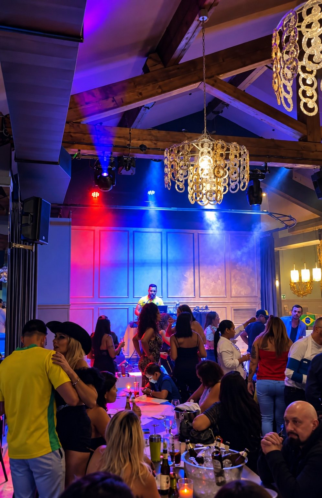
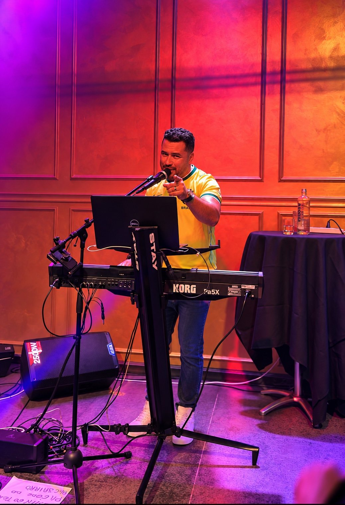
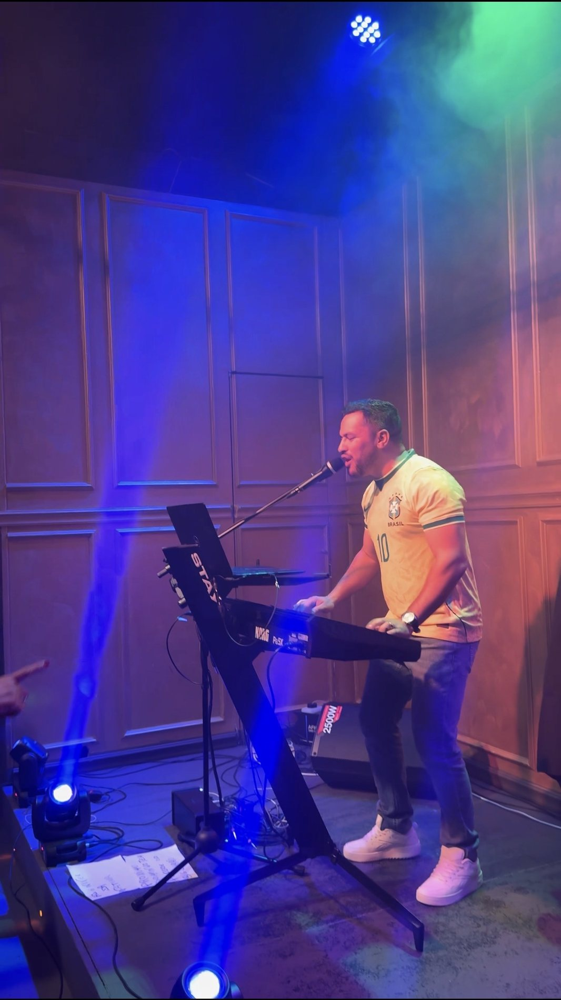

01 · PRODUZIONE
STRUTTURA COMPLETA
Il palco prende forma.
Uno sguardo alla preparazione, al setup e all’atmosfera dello show.
LIVE EXPERIENCE · ITALIA
Voce e tastiera dal vivo, con impianto audio e illuminazione completi. Un’esperienza brasiliana pensata per far vivere la musica insieme.

01 / LIVE EXPERIENCE
Tre momenti autentici: la produzione, la performance e la risposta delle persone. Premi play per sentire l’atmosfera.
STRUTTURA COMPLETA
Uno sguardo alla preparazione, al setup e all’atmosfera dello show.
VOCE E TASTIERA
Performance autentica, presenza scenica e repertorio brasiliano.
ENERGIA CONDIVISA
La pista, il canto e la connessione con le persone diventano parte dello spettacolo.
DAL VIVO, SENZA FILTRI
Un palco, una tastiera e persone che entrano nel ritmo. Ogni serata prende la sua forma.




02 / LO SPETTACOLO
Robertinho porta voce e tastiera dal vivo, con impianto audio e illuminazione completi. Una proposta musicale brasiliana per ristoranti, feste private, serate brasiliane ed eventi culturali.
Interpretazione dal vivo e contatto diretto con il pubblico.
Una struttura completa per dare presenza e atmosfera alla serata.
Forró, piseiro, arrocha e repertorio brasiliano e latino.

Do Brasil.03 / ROBERTINHO DO BRASIL
Dall’Espírito Santo all’Italia, Robertinho porta sul palco le sue radici e la voglia di stare insieme attraverso la musica.
Già conosciuto come Robertinho o Rei do Chinelado, oggi unisce forró e piseiro a un repertorio brasiliano e latino. Il centro dello show è l’incontro: un ritornello da cantare, un ritmo da seguire, una serata da ricordare.
ESPÍRITO SANTO → ITALIA04 / ESPERIENZE & PALCHI
Tra le realtà con cui Robertinho ha condiviso la sua musica:
IL PROSSIMO EVENTO, INSIEME.
VENETO · LOMBARDIA
MODENA · PARMA · REGGIO EMILIA
Contatto diretto. Nessun modulo da compilare.